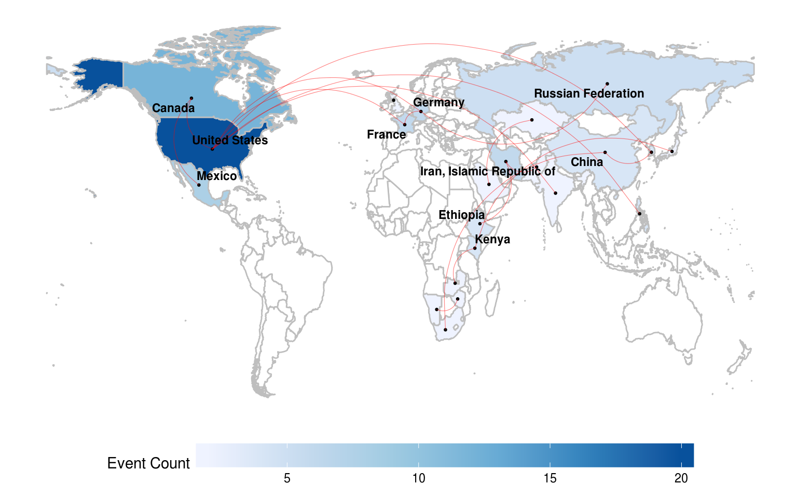
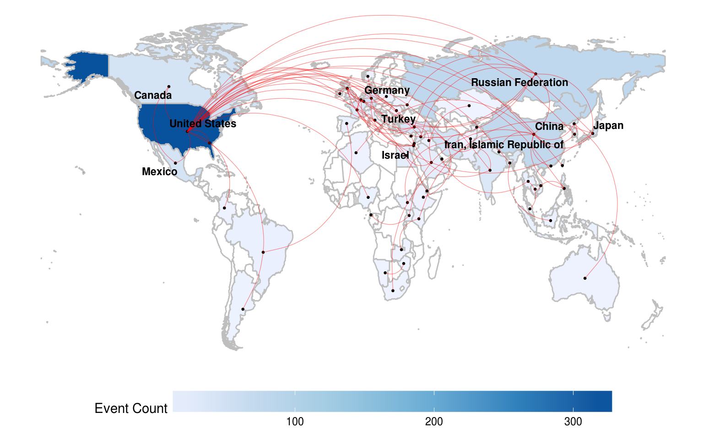
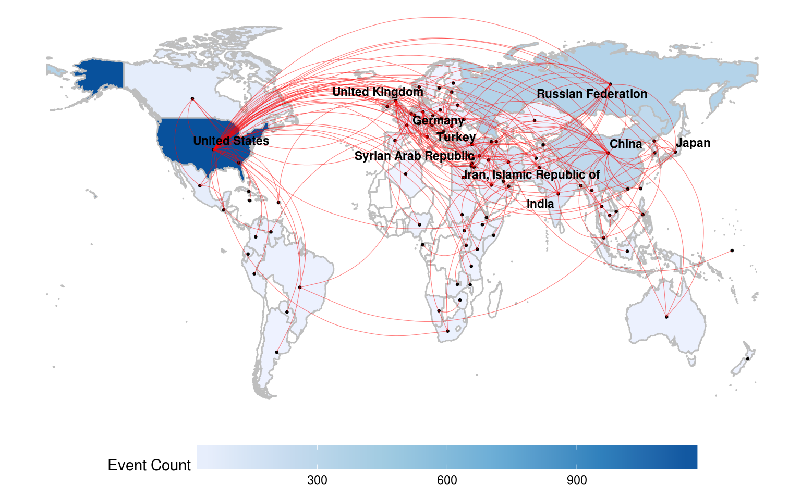

2 Activity
library(plyr)
library(cshapes)
library(countrycode)
library(tidyverse)
library(lubridate)
library(broom)
library(yaml)
library(ggrepel)2.1 Loading Dataset
Load Phoenix events and few other things we need for plotting.
source('R/phoenix.R')
config <- yaml.load_file("config.yml")
events <- phoenix_load(config, "2017-01-01")
country_centroids <- read_csv(config$google$centroids)
world_map <- tidy(cshp(as.Date("2016-06-30")), region = "COWCODE")## Warning: use rgdal::readOGR or sf::st_readFunction for summarizing events. Return value contains a list of nodes and edges reprensenting dyadic events.
get_event_summary <- function(events, centroids, period = 0) {
events <- events %>%
filter(Date >= (max(Date) - days(period))) %>%
filter(SourceActorRole == "GOV" & TargetActorRole == "GOV")
nodes <- events %>%
mutate(TargetActorEntity = ifelse(SourceActorEntity == TargetActorEntity, NA, TargetActorEntity)) %>%
gather(ActorType, ActorEntity, SourceActorEntity, TargetActorEntity) %>%
filter(!is.na(ActorEntity), !(ActorEntity == "")) %>%
group_by(ActorEntity) %>%
summarize(EventCount = n()) %>%
mutate(CountryCode = countrycode(ActorEntity, "iso3c", "cown"), EventCount) %>%
select(CountryCode, Country = ActorEntity, EventCount) %>%
left_join(centroids, by = "Country") %>%
arrange(desc(EventCount))
edges <- events %>%
filter(!is.na(SourceActorEntity), !(SourceActorEntity == ""),
!is.na(TargetActorEntity), !(TargetActorEntity == ""),
SourceActorEntity != TargetActorEntity) %>%
rowwise() %>%
mutate(Dyad = paste(sort(c(SourceActorEntity, TargetActorEntity)), collapse = "-")) %>%
ungroup() %>%
group_by(Dyad) %>%
summarize(EventCount = n()) %>%
ungroup() %>%
separate(Dyad, c("SideA", "SideB"), "-", remove = FALSE) %>%
mutate(CountryA = countrycode(SideA, "iso3c", "country.name"),
CountryB = countrycode(SideB, "iso3c", "country.name")) %>%
left_join(centroids, by = c("SideA" = "Country")) %>%
select(Dyad, SideA, SideB, CountryA, CountryB, EventCount, SideA_Latitude = Latitude, SideA_Longitude = Longitude) %>%
left_join(centroids, by = c("SideB" = "Country")) %>%
select(Dyad, SideA, SideB, CountryA, CountryB, EventCount, SideA_Latitude, SideA_Longitude, SideB_Latitude = Latitude, SideB_Longitude = Longitude) %>%
arrange(desc(EventCount))
return(list(nodes = nodes, edges = edges))
}Function for plotting activity on a map.
plot_activity <- function(map, event_summary) {
map <- map %>%
mutate(id = as.numeric(id)) %>%
left_join(event_summary$nodes, by = c("id" = "CountryCode"))
ggplot(map) +
geom_map(map = map, aes(map_id = id, fill = EventCount), color = "gray", size = 0.5) +
scale_fill_distiller(name = "Event Count", palette = "Blues", direction = 1, na.value = "white") +
expand_limits(x = map$long, y = map$lat) +
coord_cartesian() +
geom_point(aes(x = Longitude, y = Latitude),
data = event_summary$nodes,
size = 0.5) +
geom_curve(aes(x = SideA_Longitude,
y = SideA_Latitude,
xend = SideB_Longitude,
yend = SideB_Latitude),
data = event_summary$edges,
size = 0.2,
alpha = 0.5,
color = "red") +
geom_text_repel(aes(x = Longitude, y = Latitude, label = CountryName),
data = head(event_summary$nodes, 10),
force = 0.1,
size = 3,
fontface = "bold") +
theme_minimal() +
theme(legend.position = "bottom",
legend.key.width = unit(5, "line"),
axis.title = element_blank(),
axis.text = element_blank(),
panel.grid = element_blank())
}This function simply formats the top 10 rows from the dataset in a pretty table.
show_top10 <- function(x) {
x %>%
head(n = 10) %>%
knitr::kable()
}2.2 Most Active on 2017-04-29
event_summary <- get_event_summary(events, country_centroids)
show_top10(select(event_summary$nodes, CountryName, EventCount))CountryName EventCount ———— ———–
show_top10(select(event_summary$edges, CountryA, CountryB, EventCount))CountryA CountryB EventCount ——— ——— ———–
plot_activity(world_map, event_summary)
2.3 Most Active in Last 7 Days
event_summary <- get_event_summary(events, country_centroids, period = 7)## Warning in countrycode(c("AFG", "ARG", "AUS", "BEL", "BGD", "BRA", "CAN", : Some values were not matched unambiguously: HKG, IGO, PSE## Warning in countrycode(c("AFG", "AFG", "ARG", "AUS", "AUS", "BEL", "BGD", : Some values were not matched unambiguously: IGOshow_top10(select(event_summary$nodes, CountryName, EventCount))| CountryName | EventCount |
|---|---|
| United States | 280 |
| China | 66 |
| Russian Federation | 60 |
| Japan | 46 |
| Israel | 38 |
| Germany | 36 |
| Iran, Islamic Republic of | 34 |
| Turkey | 32 |
| Mexico | 28 |
| India | 27 |
show_top10(select(event_summary$edges, CountryA, CountryB, EventCount))| CountryA | CountryB | EventCount |
|---|---|---|
| Germany | Israel | 27 |
| Japan | Russian Federation | 24 |
| India | United States of America | 19 |
| China | Japan | 16 |
| China | United States of America | 16 |
| Iran (Islamic Republic of) | United States of America | 16 |
| Syrian Arab Republic | United States of America | 16 |
| Canada | Mexico | 14 |
| Egypt | Saudi Arabia | 14 |
| Mexico | United States of America | 12 |
plot_activity(world_map, event_summary)## Warning: Removed 1 rows containing missing values (geom_point).## Warning: Removed 1 rows containing missing values (geom_curve).
2.4 Most Active in Last 30 Days
event_summary <- get_event_summary(events, country_centroids, period = 30)## Warning in countrycode(c("AFG", "ARE", "ARG", "ARM", "AUS", "AZE", "BEL", : Some values were not matched unambiguously: HKG, IGO, PSE, SRB## Warning in countrycode(c("AFG", "AFG", "AFG", "AFG", "ARE", "ARG", "ARM", : Some values were not matched unambiguously: IGOshow_top10(select(event_summary$nodes, CountryName, EventCount))| CountryName | EventCount |
|---|---|
| United States | 1138 |
| Russian Federation | 327 |
| China | 272 |
| Syrian Arab Republic | 267 |
| Germany | 155 |
| Turkey | 154 |
| United Kingdom | 138 |
| Iran, Islamic Republic of | 123 |
| India | 104 |
| Israel | 87 |
show_top10(select(event_summary$edges, CountryA, CountryB, EventCount))| CountryA | CountryB | EventCount |
|---|---|---|
| Syrian Arab Republic | United States of America | 129 |
| China | United States of America | 110 |
| Russian Federation | United States of America | 95 |
| India | United States of America | 56 |
| Iran (Islamic Republic of) | United States of America | 55 |
| Russian Federation | Syrian Arab Republic | 46 |
| Germany | France | 45 |
| Turkey | United States of America | 40 |
| Japan | United States of America | 32 |
| Pakistan | United States of America | 30 |
plot_activity(world_map, event_summary)## Warning: Removed 1 rows containing missing values (geom_point).## Warning: Removed 1 rows containing missing values (geom_curve).